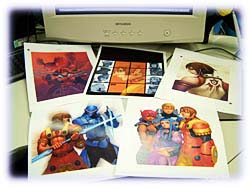
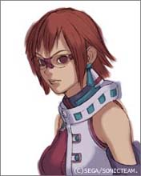
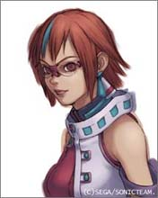
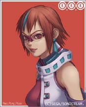
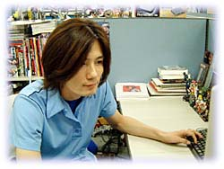

|
■プロフィール■ 幼少時代に、ゆでたまご先生の名作「キン肉マン」を模写することで絵を描く 楽しさを知り、そして「将来は絵を描く仕事につく」という野望を抱きながら '９８年セガに入社。その後『ソニックアドベンチャー』のキャラクターモーション 担当をへて、念願かない現在の『ＰＳＯ』キャラクターイラスト担当になる。現在27歳 |
|
■今回『ＰＳＯ』でビジュアル作成を担当されることになった経緯などを教えてください。
 自分の方から「イラストが描きたい」と駄々をこねてみました（笑）。 初めはチーム内で様々なイメージイラストを出し合って検討したようですし、外部の イラストレーターさんに依頼するような話も合ったようですね。 そういった中で、もともと２Ｄのイラストを描きたいという希望をしていたことも あり、「試しに数パターンのキャラクターイメージ画を描いてみるか」ということになり、結果的に 現在の仕事につくことになりました。 |
|
■現在のビジュアルに行き着くまでに意識した点や狙いどころはどういったところですか。
本来の自分の持ち味としてはもう少しハードタッチな絵柄なんですが、『ファンタシースター』 という作品にはシリーズを通して、アニメ絵的なイメージがすでにあったので、今回は できるだけ、自分がいつも描いてるような濃い絵ではなく、広く一般受けしそうな少しライト な（アニメっぽい？）感じになるようには意識しました。 あと難しかった部分として、『ＰＳＯ』ではプレイヤーキャラクターに決まったデザインが 無く、キャラメイクをすることでゲームプレイヤー自身がオリジナルキャラを作れてしまう システムのため、自分が描くキャラクター達は決して 『ＰＳＯ』の主人公イラストになって はいけないんです。そういう部分ではそれぞれが主張し過ぎないようなイメージにするために、 かなり気を遣いましたね。 |
■制作にあたって楽しまれている部分や苦労されている部分はありますか。
 『ＰＳＯ』という１つの作品の中で、あまりにも大きく絵柄を変えてしまうことはできないん
ですが、基本の雰囲気を壊さない程度に、下描きのタッチを細かくしてみたり、色を塗るツール
を普段と違うものをつかってみたりしながら毎回、絵の雰囲気を少しずつ変えて楽しんでます。
あと基本的にデフォルトカラーのキャラクター以外の初物キャラ（ex.リコ、シノ）を描くときは
無条件に楽しいですね。
『ＰＳＯ』という１つの作品の中で、あまりにも大きく絵柄を変えてしまうことはできないん
ですが、基本の雰囲気を壊さない程度に、下描きのタッチを細かくしてみたり、色を塗るツール
を普段と違うものをつかってみたりしながら毎回、絵の雰囲気を少しずつ変えて楽しんでます。
あと基本的にデフォルトカラーのキャラクター以外の初物キャラ（ex.リコ、シノ）を描くときは
無条件に楽しいですね。逆に苦労しているところは、女の子の顔ですね。どちらかというと自分の得意分野はレイマーみたいな 渋い系の顔なんで、最初の頃フォニュエールの顔が全然カワイイ感じに描けなくて結構悩みました。 今でも、その頃に描いたラフとか残ってるんですけど、そのラフとか見ると随分マシな顔が描ける ようになってきたなって思いますね。でも満足してるわけじゃないんで、この先も同じように苦労 するだろうと思います。 |
| ■今回、このページでのイラスト制作過程を紹介するためにオリジナルで「リコ」を描いてもらいました。 |

|
・スキャナで取り込んだ下描きをペインターに持ってきて、明度補正や
消しゴムツールでゴミ取りをする。同時に下描きで気になる部分に修正を
加えます。 ・下描きに関しては、Ａ４サイズのコピー用紙に芯ホルダー（シャープペンのゴツクした感じのもの） で描いてます。 |
|  |
・修正の終わった下描きを乗算レイヤーにして、キャンバスにカスタマイズした
べた塗りペンで大まかに色を塗っていきます。
色塗りに関しては、ほぼ最初から最後までPainter6.0を使用しています。 |
|  |
・広い面積の部分から順に、細かく描き込んでいきます。
個人的には、目の書き込みはは最後の楽しみにとっておいてます。 |
|  |
・下描きの主線からはみ出した部分を丁寧に消していきます。
この後、保存形式を.PSDに変えます。 最終的な色の調整や、背景処理などにはPhotoshop5.0を使用しています。 ・色の調整をしたりして最後にレイヤーを統合して完成。 |
■個人的に好きな（意識している）アーティスト（デザイナー）は誰ですか。
 好きな作家さんは、日本国内だとイラストレーターの寺田克也さんとか、造形作家の竹谷隆之さん
で、海外だとMike Mignola、Simon Bisley、Travis Charestといったアートコミック作家たちですね。
好きな作家さんは、日本国内だとイラストレーターの寺田克也さんとか、造形作家の竹谷隆之さん
で、海外だとMike Mignola、Simon Bisley、Travis Charestといったアートコミック作家たちですね。
それから同じゲーム業界内だと、金子一馬さん（アトラス）、吉田明彦さん（スクウェア）、宮本崇 さん（ｇｈｍ）といった人たちが、やっぱりスゴイなって思いますね。 |
|
■今後『ＰＳＯ』の世界やキャラクターのイメージはどのようになっていくのでしょうか。
どうなっていくんでしょう？自分の仕事はイメージが固まってからが本番なんで、なんともいえない ですが、逆に『ＰＳＯ』の世界はどんな風になって欲しいか、ユーザーの皆さんに聞いてみるのも 面白いかもしれないですね。 |
|
■ 水野さん自身、今後どのようなクリエイターを目指していかれますか。
 う〜ん、目指す理想像みたいなものは、あるにはあるんですが、その前に今回の仕事で自分の弱点 とか、これから必要なこととかが見えてきたので、まずはその課題をクリアしていかないと、前に 進もうにも進めませんし、無理して進もうとしても絶対足元すくわれますから。 まあ、そんな感じです。 |
■『ＰＳＯ』（ソニックチーム）ファンの方に一言お願いします。
 これからも、ラグオルでの冒険を楽しんでください。
これからも、ラグオルでの冒険を楽しんでください。
あと、スニーカー文庫さんから７月２日に「ＰＳＯ」の小説の下巻が発売されるので興味のある方は 買ってみてくださいね。 |
 |
お好きなサイズをダウンロードして使ってね！
1280*1024：BMPファイル(330KB) 800*600：BMPファイル(123KB) |
Copyright (C) SONICTEAM, LTD. 2001 all rights reserved.